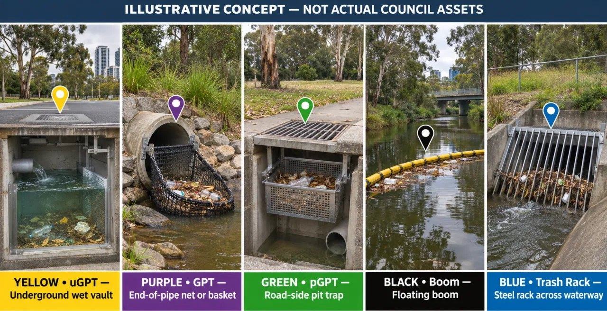

Five trap types, one decision layer
Council's asset codes and map colours, with the official definitions from the December 2022 GPT Audit (published in 2023 and reproduced in the March 2024 Council minutes; to verify against the 2026 asset register). Each type fills differently and needs its own sensor. Scoring, the email and officer approval are the same for all five. Council asked us to start with the nets.

| Map marker | Council code | Official definition | What it physically means | Important limitation | First signal |
|---|---|---|---|---|---|
| Yellow | uGPT | Underground wet vault | Standing water; captured material may be submerged. | Not directly comparable with a dry container. | Rainfall + cleaning history model Open uGPT → |
| Purple | GPT MVP focus | End-of-pipe net or basket | Outlet net or basket; exposure and geometry vary by site. | Not a label for every proprietary GPT. | Existing trail camera Open GPT → |
| Green | pGPT | Trap in road-side pit | Pit insert or basket within a roadside drainage pit. | The code alone does not prove a dry sump. | Radar or ultrasonic pit level Open pGPT → |
| Black | Boom | Floating boom across deep waterway | Floating barrier concentrating surface litter. | No simple container-style fullness percentage. | Existing wide-angle camera Open Boom → |
| Blue | Trash Rack | Steel rack across waterway | Fixed rack; debris may restrict upstream flow. | Blockage and hydraulic risk matter, not only volume. | Existing camera with AI debris coverage Open Trash Rack → |
Map colours show asset type, not condition or replacement priority. The 2024 minutes say a rectification-category map had not been developed.
The six states a net is scored into
These states apply to nets, baskets and pits. Booms and trash racks are scored on blockage, not a fill percentage. Council's target is to intervene at 70–80% full; the thresholds are a starting point for the open question "What counts as full?". Simulated examples built from two Council frames.

Today
- Camera nets: one person reviews the day's photos, weekdays only. The judgement lives in that person's head.
- Everything else: cleaned about every three months, after a big storm, or from experience ("that one fills after 20 mm, that one after 90 mm").
- Some nets are emptied half full; some have already overflowed or detached.


With Net Watch
- Every image scored the day it arrives, weekends and holidays included.
- Rain-aware trigger: empty the net when it can't hold the next forecast storm.
- A morning email of the nets that need action, and an urgent email when a net tears, each with the photo, the reason and the confidence.
- The officer approves, defers or asks for an inspection. The outcome is recorded, so each net's fill rate is learned over time.